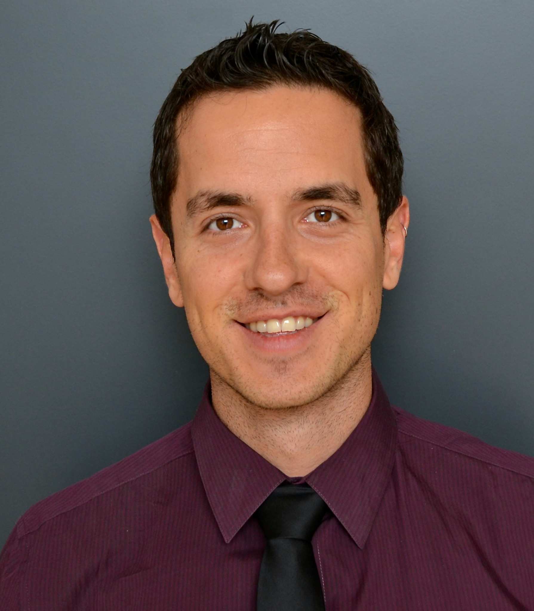

I study quantum algorithms for optimization and simulation, with a focus on their performance and computational complexity.
I work with USRA’s Research Institute for Advanced Computer Science and the Quantum Artificial Intelligence Laboratory (QuAIL) at NASA Ames Research Center. I received my Ph.D. in computer science from Columbia University.

Recent & upcoming
Measurement-driven quantum approximate optimization accepted in Physical Review A.
New preprint: Quantum Approximation Complexity of Classical Optimization Problems.
Two papers in the proceedings of IEEE Quantum Week in Toronto: NDAR-qudits and iterative warm-start optimization. I gave two talks: a technical program talk on NDAR-qudits and an invited workshop talk on QAOA complexity at QuACO.
Research Interests
Quantum optimization
QAOA, the quantum alternating operator ansatz, hybrid algorithms, and constrained combinatorial problems.
Algorithms & Complexity
Algorithm design and analysis, approximation guarantees, state preparation, and the prospects for quantum advantage.
Quantum simulation
Algorithms and circuit primitives for scientific computing and simulating physical systems, from quantum chemistry to high energy physics.
Selected publications
-
Quantum Approximation Complexity of Classical Optimization Problems
-
From the Quantum Approximate Optimization Algorithm to a Quantum Alternating Operator Ansatz
-
Challenges and Opportunities in Quantum Optimization
-
On the representation of Boolean and real functions as Hamiltonians for quantum computing
-
Quantum Approximate Optimization Algorithm for MaxCut: A Fermionic View
-
Improving Quantum Approximate Optimization by Noise-Directed Adaptive Remapping
-
Quantum Approximate Optimization via Noise-Directed Adaptive Warm-Starting
-
Primitive Quantum Gates for Dihedral Gauge Theories
Background
I received my Ph.D. in computer science from Columbia University in 2018, working in theoretical computer science and quantum computing. My advisers were Joseph F. Traub, Alfred V. Aho, and Anargyros Papageorgiou. My dissertation, Quantum Algorithms for Scientific Computing and Approximate Optimization, is freely available on arXiv. I joined NASA QuAIL and USRA’s Research Institute for Advanced Computer Science (RIACS) in spring 2018.
Before my Ph.D., I received a master’s degree in computer science from Columbia, an honours degree in theoretical physics from the University of Melbourne, and a bachelor’s degree in engineering physics from the University of British Columbia. My honours thesis studied fault-tolerant quantum computation. I also worked in software and hardware engineering, specializing in embedded systems and performance optimization.
My broader interests include the mathematical foundations of quantum physics and computation, and the ways science and technology can improve people’s lives. I am a founding member of Q4Climate, an initiative exploring quantum computing and climate change.
Contact
New York, NY
We are often looking for research interns in quantum computing and related areas. See the Feynman Quantum Academy for application details.